長期トレンド
JKMとJEPXシステムプライスの推移グラフ
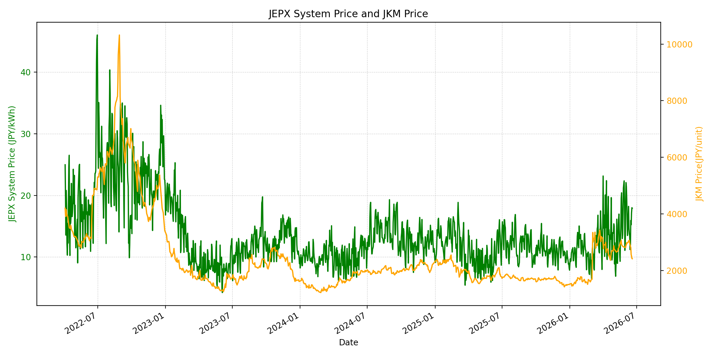
WTIの推移グラフ
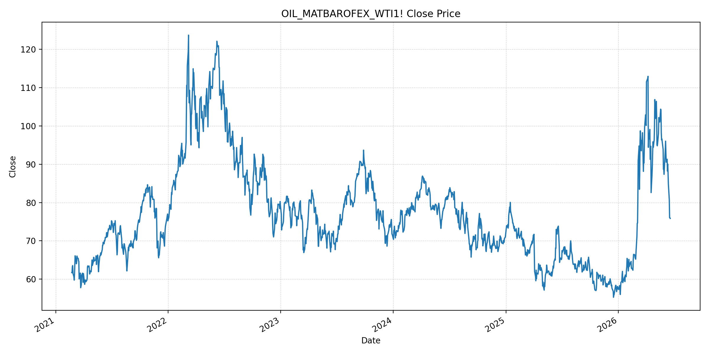
JEPXエリアプライスグラフ（直近一年分）
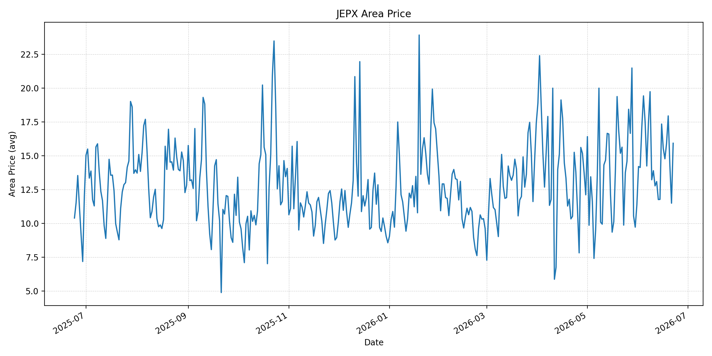
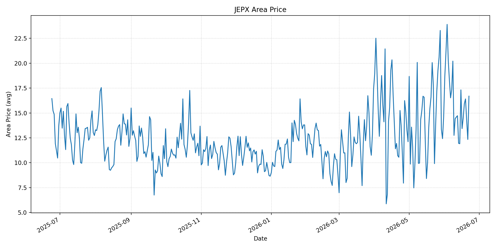
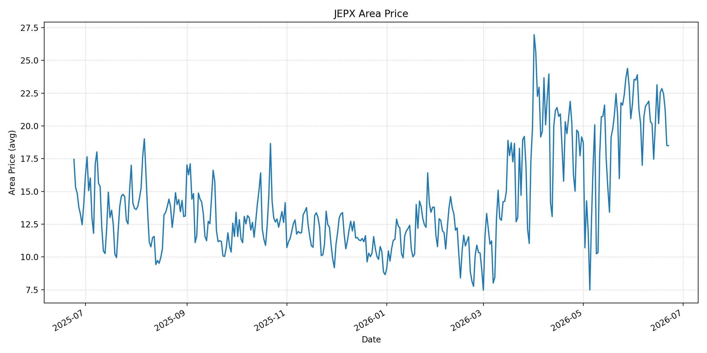
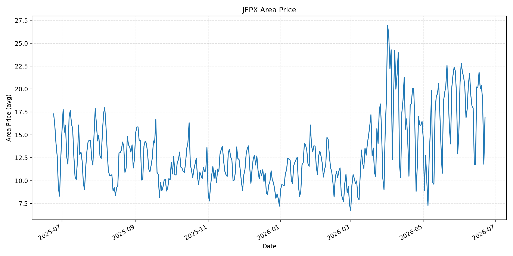
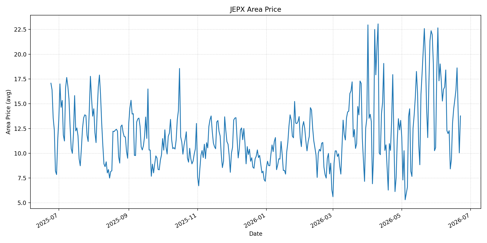
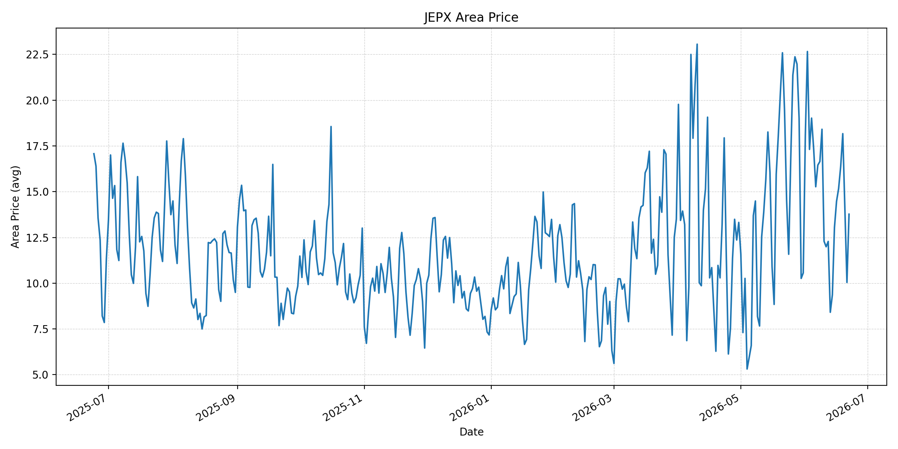
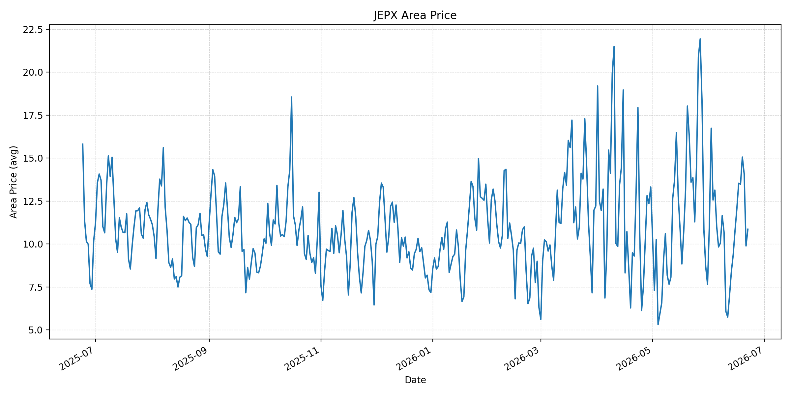
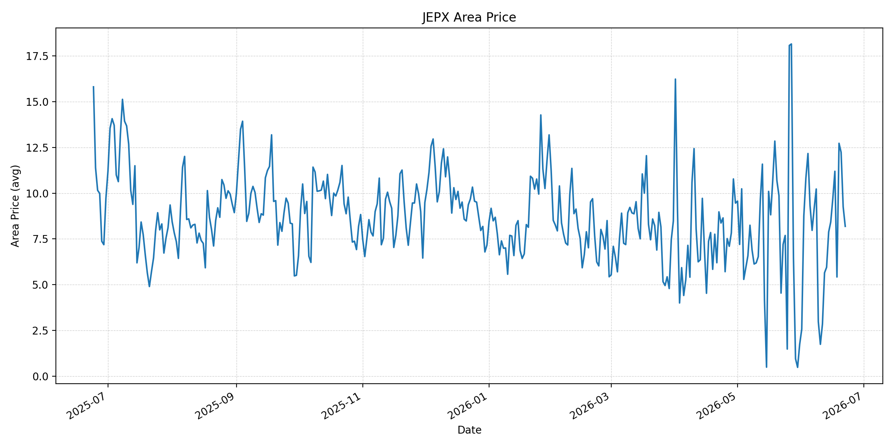
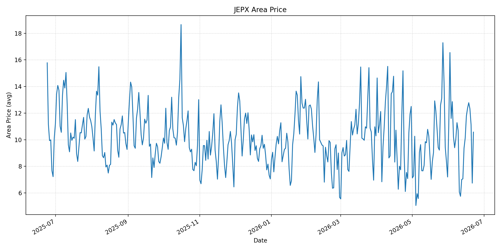
短期トレンド
JKMとJEPXシステムプライスの推移グラフ
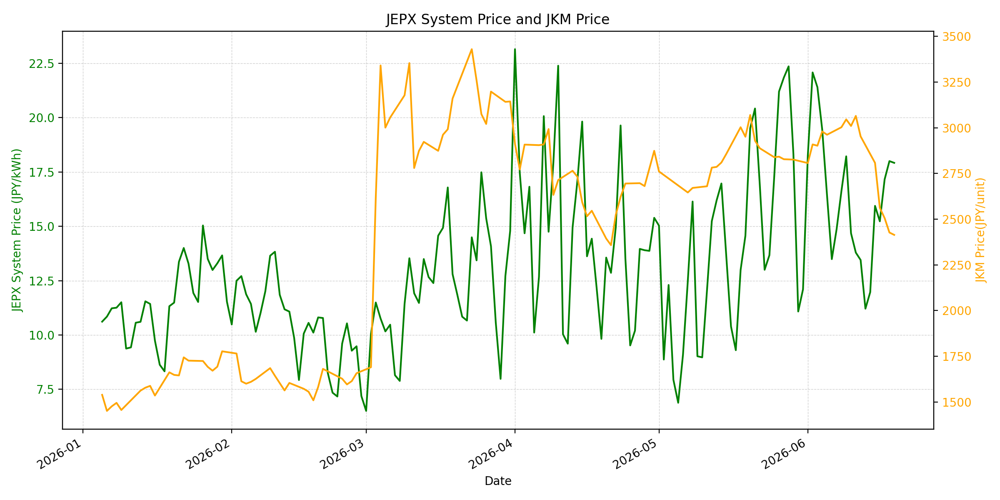
WTIの推移グラフ

JEPXシステムプライス
JEPXは受渡日ベースの最新非空値で評価しています。最新値は 2026-06-22 分です。先週終値は 2026-06-15 時点の直近値、先月終値は 2026-05-31 時点の直近値で評価しています。
| エリア | 当日価格 | 前日価格 | 前日比（％） | 先週終値 | 先週比（％） | 先月終値 | 先月比（％） | 過去最高値 | 最高値比（％） |
|---|---|---|---|---|---|---|---|---|---|
| システム | 14.10 | 11.93 | 18.19 | 15.94 | -11.54 | 12.10 | 16.53 | 64.06 | -77.99 |
| 北海道 | 15.92 | 11.49 | 38.56 | 17.34 | -8.19 | 11.38 | 39.89 | 73.92 | -78.46 |
| 東北 | 16.69 | 12.34 | 35.25 | 17.32 | -3.64 | 14.64 | 14.00 | 84.92 | -80.35 |
| 東京 | 18.49 | 18.51 | -0.11 | 23.14 | -20.10 | 21.65 | -14.60 | 86.13 | -78.53 |
| 中部 | 16.88 | 11.79 | 43.17 | 20.23 | -16.56 | 15.25 | 10.69 | 52.06 | -67.58 |
| 北陸 | 13.77 | 10.04 | 37.15 | 13.04 | 5.60 | 10.56 | 30.40 | 46.48 | -70.38 |
| 関西 | 13.77 | 10.04 | 37.15 | 13.04 | 5.60 | 10.56 | 30.40 | 46.48 | -70.38 |
| 中国 | 10.86 | 9.89 | 9.81 | 10.78 | 0.74 | 7.66 | 41.78 | 46.48 | -76.64 |
| 四国 | 8.19 | 9.26 | -11.56 | 8.43 | -2.85 | 1.74 | 370.69 | 46.48 | -82.38 |
| 九州 | 10.57 | 6.74 | 56.82 | 10.13 | 4.34 | 7.20 | 46.81 | 40.54 | -73.93 |
LNG先物価格
最新値は 2026-06-19 の LNG(close) です。先週終値は 2026-06-12 時点の直近値、先月終値は 2026-05-29 時点の直近値で評価しています。
| 当日価格 | 前日価格 | 前日比（％） | 先週終値 | 先週比（％） | 先月終値 | 先月比（％） | 過去最高値 | 最高値比（％） |
|---|---|---|---|---|---|---|---|---|
| 2414.00 | 2427.00 | -0.54 | 2953.00 | -18.25 | 2826.00 | -14.58 | 10319.00 | -76.61 |
石油先物価格
最新値は 2026-06-18 の OIL(close) です。先週終値は 2026-06-11 時点の直近値、先月終値は 2026-05-29 時点の直近値で評価しています。
| 当日価格 | 前日価格 | 前日比（％） | 先週終値 | 先週比（％） | 先月終値 | 先月比（％） | 過去最高値 | 最高値比（％） |
|---|---|---|---|---|---|---|---|---|
| 75.85 | 76.01 | -0.21 | 87.71 | -13.52 | 87.36 | -13.18 | 123.70 | -38.68 |
ニュース
イラン情勢に関するニュース
- 2026年6月21日、APは、米国とイランの代表団がスイスで、暫定合意の実装、核協議、レバノン停戦、ホルムズ海峡の扱いを協議したと報じました。イランはレバノン問題を優先し、米国は核合意と海峡開放の維持を重視しています。 参照: AP, 2026-06-21
- 2026年6月21日、Guardianは、トランプ大統領の強硬発言を受けてイラン代表団が一時退席し、協議はカタールとパキスタンの仲介を通じて継続したと報じました。油輸出制裁の免除や凍結資産解除では一定の前進が示されています。 参照: The Guardian, 2026-06-21
ホルムズ海峡経由の石油・LNGに関するニュース
- 2026年6月21日、APは、イランがイスラエルのレバノン攻撃を理由にホルムズ海峡を再び閉鎖したと主張する一方、米側は通航継続を説明し、67隻が過去24時間で通航したと報じました。米側は南側の別航路で船舶を護衛しています。 参照: AP, 2026-06-21
- 2026年6月21日、APは、ホルムズ海峡を巡る不確実性を受けて米国原油が約3%上昇し78.70ドル、Brentが約1%上昇し81.70ドルになったと報じました。燃料価格は低下基調から一時的に反発しています。 参照: AP, 2026-06-21
ホルムズ海峡経由でない石油・LNGに関するニュース
- 過去24時間で、日本向けの非ホルムズ新規大型調達に関する強い追加報道は確認できませんでした。協議ではイランの油輸出制裁免除や凍結資産解除が焦点で、非ホルムズ代替調達の追加確保より、既存航路の安定化が主題です。 参照: The Guardian, 2026-06-21
- 直近ではMarketWatchが、ホルムズ通航正常化には安全通航の保証と戦争リスク保険料の低下が必要と整理しています。代替調達でも船腹、保険、物流費の調整には時間差があり、燃料価格の下落だけで供給リスクは消えません。 参照: MarketWatch, 2026-06-18
日本国内のイラン戦争に関係するニュース
- 過去24時間で、JEPX制度や国内電力需給ルールを直接変更する日本政府の強い新規発表は確認できませんでした。直近では経済産業省が2026年5月20日に、今夏は全エリアで最低限必要な予備率3%を確保できるため節電要請は実施しないと発表しています。 参照: 経済産業省, 2026-05-20
- 同発表では、国際情勢の変化、異常気象、発電所休廃止、火力発電所の地域集中をリスクとして明記しています。ホルムズ海峡を巡る再緊張が続く限り、国内卸電力は燃料調達と地域需給を分けて確認する必要があります。 参照: 経済産業省, 2026-05-20
インサイト
ニュース事項による日本の電力市場への影響（短期：数日〜1週間）
- JEPXシステムプライスは 14.10 円/kWhで前日比 18.19% 上昇しましたが、先週比は -11.54% です。東京は 18.49 まで下がり、先週比 -20.10% と、先週の東日本高値からは落ち着いています。
- LNGは 2414.00 で先週比 -18.25%、OILは 75.85 で先週比 -13.52% と燃料面は下落基調です。ただしAPが報じるホルムズ再閉鎖主張と原油反発により、数日から1週間では燃料安の織り込みが一時停止し得ます。
- 九州は 10.57 円/kWhで前日比 56.82%、中部は 16.88 円/kWhで前日比 43.17% です。全体水準は過去高値比で低い一方、エリア別の反発が出ており、短期のJEPXは燃料価格だけではなく地域需給を重視します。
ニュース事項による日本の電力市場への影響（長期：1ヶ月〜半年）
- 米イラン協議は継続しているものの、レバノン停戦、核協議、ホルムズ通航管理が同時に絡んでいます。LNGは過去最高値比 -76.61%、OILは -38.68% と低位ですが、協議決裂や保険料再上昇があれば、半年内の調達コスト低下は限定されます。
- Guardianが報じる制裁免除や凍結資産解除の前進は、イラン産原油供給の回復に向けたプラス材料です。一方、米側の通航継続説明とイラン側の閉鎖主張が並存しており、船会社・保険会社が通常運航へ戻るには実績確認が必要です。
- 経済産業省は今夏の節電要請を見送っていますが、国際情勢と火力発電所の地域集中をリスクとして残しています。システム価格は先月比 16.53% とまだ高く、燃料安が続いても夏季需要と地域需給が卸価格の下支えになり得ます。